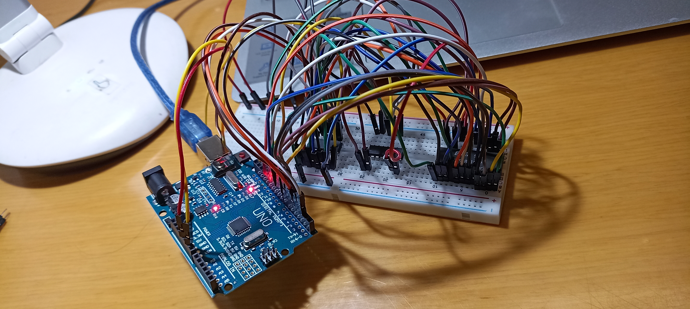

Copyright © Sai Charan L All content on this blog is shared under the Creative Commons license CC BY-NC-ND
From quite some time, I have been thinking about building the 8-bit computer based on SAP-1 architecture that is demoed on Ben Eater's YouTube channel. But I never gave any further thoughts and always left that idea behind just because I thought it is a bit complex and involved a lot of components. However, I recently I saw a video as part of that series where an EEPROM programmer is build using Arduino and a shiftregister. It barely has more than 3 components to build something that interesting. I think that is the only video with the longest duration in the entire series. So, based on the number of components used in the process, I think its doeable and started planning to do it during my vacation because at some point I will be bored and getting engaged in this task can be pretty fun.
So I started collecting all the components that are required - an EEPROM (28C16 2K x 8 from Excel Microelectronics), 8-bit shiftregisters (74HS595 from ST Microelectronics), breadboard, jumper wires and an Arduino Uno board (I tried with nano version but maybe because of not making it sit on the breadboard correctly, it didn't quite do the job). As you can see, it involved all the regular components though I had to run between shops to find the EEPROM itself. I planned to just implement what is said on the video. To a person like me who barely worked on any ICs and did any Arduino projects, replicating what is done on the video is a big achievement. So, I thought that would be a good starting point.
Note: When I started building it, I had a few issues with the LEDs itself. So I thought to print the output directly to the serial monitor instead of observing it using LEDs. Hence I didn't go for another round of shopping.
Testing and configuring Arduino for the 74595 shiftregisters -
To begin with, I first tested the shiftregister itself. Pin 11 is the serial data pin, pin 12 is the clock pin for the register itself and pin 14 is the clock of the latch inside the 595 IC. Unlike 74164 shiftregister IC, the 74595 IC has an output storage register. The main difference that I observed is the way the data is released via the parallel output pins. For the 74595, there is an option to store the output and not release it immediately hence the latch clock. And there is no such thing for 74164 serial-in parallel-out 8-bit shiftregister.
First we define the pins and then we declare the pinModes. There is a very comfortable function to out the serial data in the Arduino library which is called shiftOut(). So once the data is serially sent from the Arduino to the inputs of the shift register, it is then stored in that 8-bit output register. Only if the latch clock is high, this data is sent out. Hence we create a pulse using digitalWrite() function.
Below code should send serial data to the shiftregister and print back the output of the IC via serial monitor. I think this is the best way to work if LEDs are not present unlike that is shown in the video.
#define SHIFT_DATA 2 // pin 11 in 595
#define SHIFT_CLK 3 // pin 12 in 595
#define SHIFT_LATCH 4 // pin 14 in 595
void setup() {
pinMode(SHIFT_DATA, OUTPUT);
pinMode(SHIFT_CLK, OUTPUT);
pinMode(SHIFT_LATCH, OUTPUT);
shiftOut(SHIFT_DATA, SHIFT_CLK, MSBFIRST, #data);
digitalWrite(SHIFT_LATCH, LOW);
digitalWrite(SHIFT_LATCH, HIGH);
digitalWrite(SHIFT_LATCH, LOW);
Serial.begin(9600);
# outputs of 74595 are connected to Arduino digital pins from 5 to 12.
for (pin = 5; pin <= 12; pin += 1){
pinMode(pin, OUTPUT);
Serial.println(digitalWrite(pin));
}
....
...
..
void setAddress(int address, bool outputEnable){
shiftOut(SHIFT_DATA, SHIFT_CLK, MSBFIRST, (address >> 8) | (outputEnable ? 0x00 : 0x80) );
shiftOut(SHIFT_DATA, SHIFT_CLK, MSBFIRST, address);
digitalWrite(SHIFT_LATCH, LOW);
digitalWrite(SHIFT_LATCH, HIGH);
digitalWrite(SHIFT_LATCH, LOW);
}
.....
...
..
.
#define SHIFT_DATA 2 // pin 11 in 595
#define SHIFT_CLK 3 // pin 12 in 595
#define SHIFT_LATCH 4 // pin 14 in 595
#define EEPROM_DO 5
#define EEPROM_D7 12
#define WRITE_ENABLE 13
void setAddress(int address, bool outputEnable){
shiftOut(SHIFT_DATA, SHIFT_CLK, MSBFIRST, (address >> 8) | (outputEnable ? 0x00 : 0x80) );
shiftOut(SHIFT_DATA, SHIFT_CLK, MSBFIRST, address);
digitalWrite(SHIFT_LATCH, LOW);
digitalWrite(SHIFT_LATCH, HIGH);
digitalWrite(SHIFT_LATCH, LOW);
}
byte readEEPROM(int address){
for (int pin = 5; pin <= 12; pin += 1){
pinMode(pin, INPUT);
}
setAddress(address, true);
byte data = 0;
for (int pin = 12; pin >= 5; pin -= 1) {
data = (data << 1) + digitalRead(pin);
}
return data;
}
void setup() {
// put your setup code here, to run once:
pinMode(SHIFT_DATA, OUTPUT);
pinMode(SHIFT_CLK, OUTPUT);
pinMode(SHIFT_LATCH, OUTPUT);
digitalWrite(13, HIGH);
pinMode(13, OUTPUT);
Serial.begin(9600);
// Read individual address
Serial.println(readEEPROM(2));
....
...
..
void writeEEPROM(int address, byte data){
for (int pin = 5; pin <= 12; pin += 1) {
pinMode(pin, OUTPUT);
}
setAddress(address, false);
for (int pin = 5; pin <= 12; pin += 1) {
digitalWrite(pin, data & 1);
data = data >> 1;
}
digitalWrite(13, LOW);
delayMicroseconds(10);
digitalWrite(13, HIGH);
delay(10);
}
.....
...
..
.


Copyright © Sai Charan L All content on this blog is shared under the Creative Commons license CC BY-NC-ND